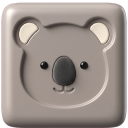
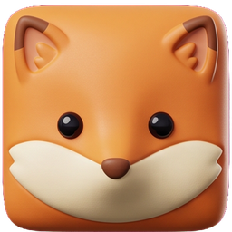
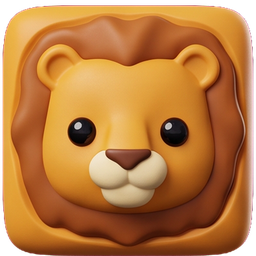
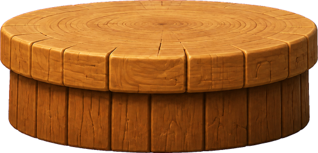

Dein Tempo
Leicht, Mittel oder Schwer: Wähle deine Herausforderung. Jede Stufe hat ihre eigenen Rekorde.
Ein Tipp löst den Griff. Ein Tier landet auf dem nächsten. Wie hoch wächst dein Wobble Zoo?
Für iPhone · iOS 17 oder neuer




Da geht noch was!Der Kran schwingt, du wählst den Moment. Auch eine schräge Landung zählt, wenn das Tier liegen bleibt. Erst wenn ein Tier unter die Plattform fällt, endet die Runde.
Leicht, Mittel oder Schwer: Wähle deine Herausforderung. Jede Stufe hat ihre eigenen Rekorde.
Triff die Mitte für einen perfekten Treffer und baue deinen Turm Tier für Tier höher.
Ein freiwilliges Video kann deine Runde einmal retten. Neu starten bleibt kostenlos.
„Banner & Werbepausen entfernen“ schaltet Banner und gelegentliche Werbepausen dauerhaft ab. Kein Abo. Den aktuellen Preis findest du in den Einstellungen der App.
Freiwillige Videos zum Weiterspielen bleiben verfügbar.